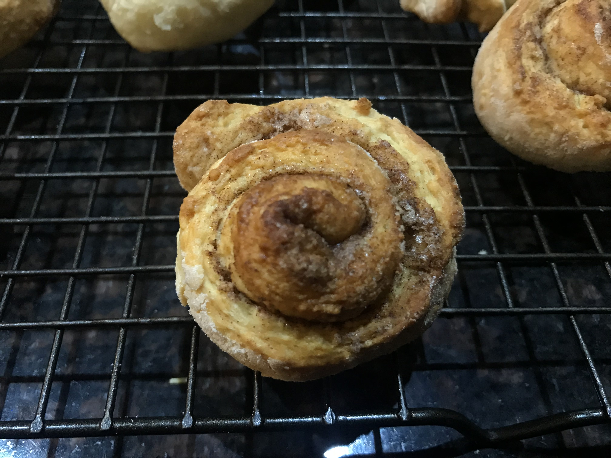
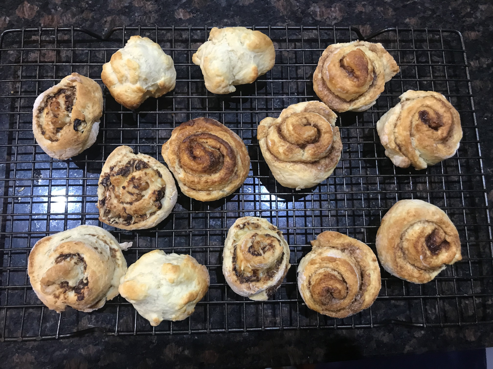

Favourable Food
Scrolls

Ingredients
Base Ingredients:
2 cups of plain flour
4 tsp of baking powder
½ tsp of salt
60g of cubed butter
¾ cup of milk
For Cinnamon Scrolls:
1/4 cup sugar
2 ½ tsp ground cinnamon
butter (olivani or marg is fine as well)
For Marmite and Cheese Scrolls:
marmite
cheese
Method
- Sift all the dry ingredients into a medium bowl
- Put the butter into the bowl with the dry ingredients
- Rub the butter with the flour until the mixture is like fine breadcrumbs
- Preheat the oven to 200°C fan bake
- Make a well in the middle of the flour mixture
- Add the milk in all at once and mix with a knife until it forms a dough (if it's too sticky, add some flour) but make sure not to over mix
- On a floured surface, roll out the dough into a rectangle or square shape
- On the top side (side facing you) put whatever filling you want on it. Then roll it up, cut it and spread it out on a baking paper lined sheet
- You can choose to leave it here as a scone recipe and or you could add extra toppings like cinnamon or marmite and cheese flavoured ones (see below)
If not, bake it in the oven for
15 mins or until golden brown.
Cinnamon
For cinnamon, spread butter (or olivani/margarine) on the top side. Then in a separate bowl mix the sugar and cinnamon together.
After that, sprinkle the sugar mixture onto the buttered surface. Then roll it up, cut it and spread the scrolls out on a baking paper lined tray then bake for 15 mins or until golden brown.
Marmite and cheese
For marmite and cheese, spread the marmite on the top side of the dough then sprinkle cheese over top. Roll it, cut it and spread the scrolls out on a
baking paper lined tray then bake for 15 mins or until golden brown.
